Each student brought a program of their own and built it through the term. These are their promo pages: what the program is for, who it is for, and how to try it.
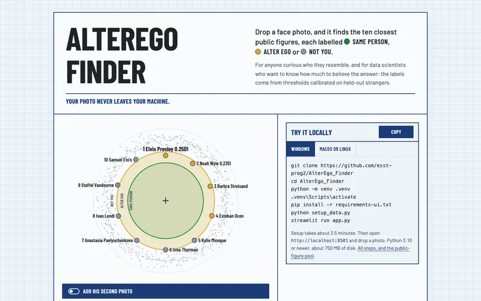
AlterEgo Finder A lookalike finder that says Not You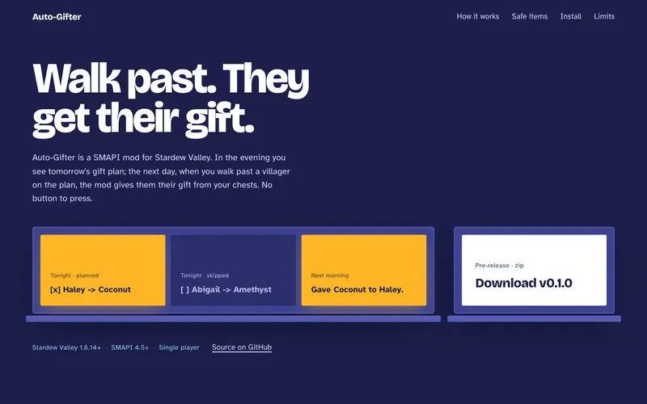
Auto-Gifter Walk past, they get their gift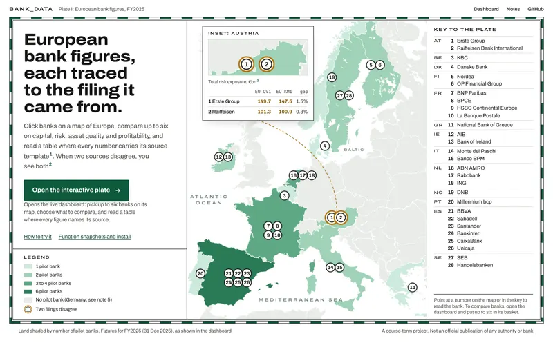
Bank_Data European bank figures, traced to the filing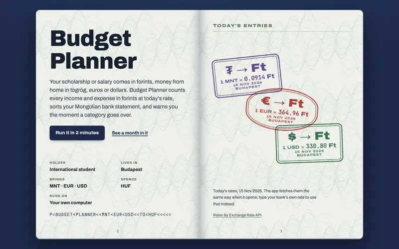
Budget Planner A budget planner for international students in Budapest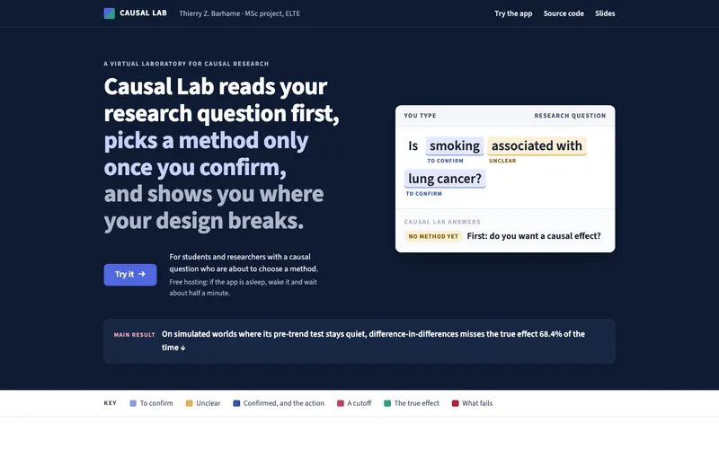
Causal Lab It reads your research question before it picks a method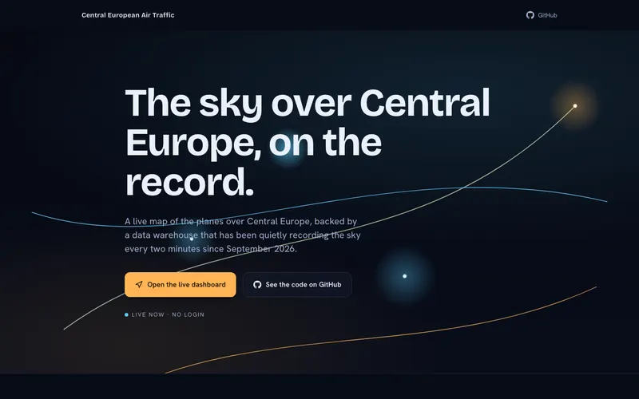
Central European Air Traffic A live map of the planes over Central Europe, backed by a data warehouse recording the sky every two minutes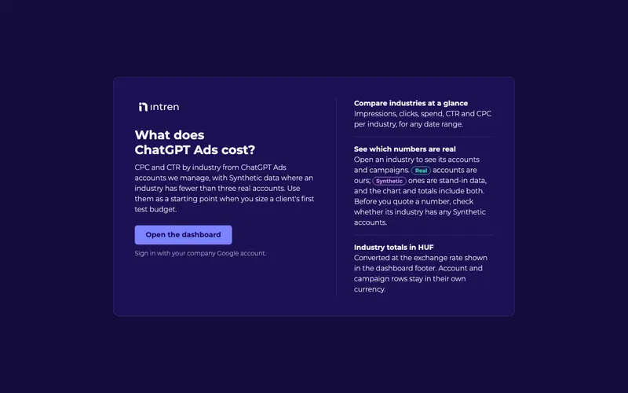
ChatGPT Ads Industry Dashboard Internal tool for the PPC team: ChatGPT Ads CPC and CTR by industry, from accounts we manage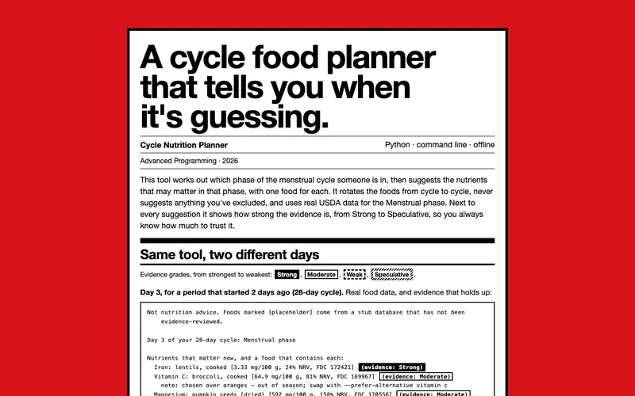
Cycle Nutrition Planner A cycle food planner that tells you when it's guessing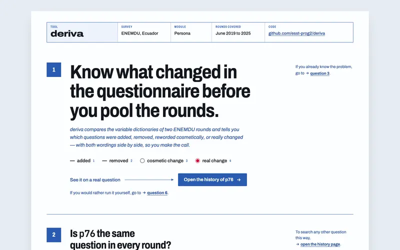
deriva Know what changed in ENEMDU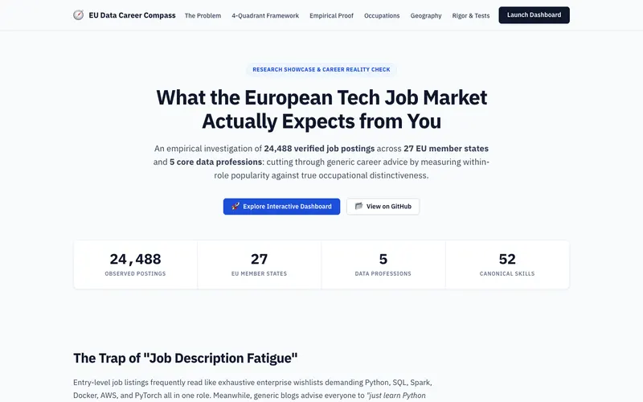
EU Data Career Compass European Tech Job Market Analysis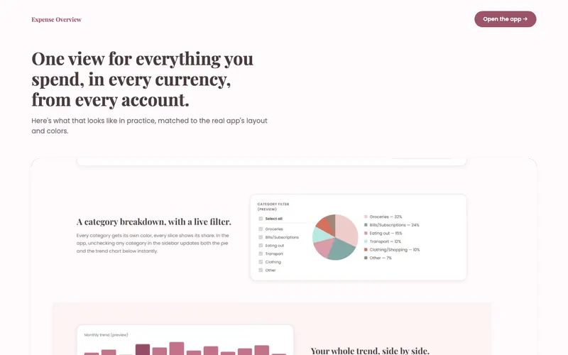
Expense Overview One view for everything you spend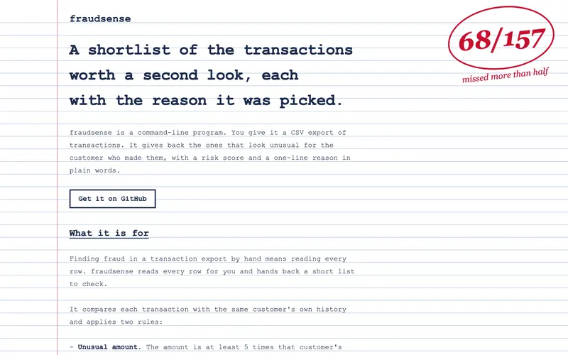
fraudsense A shortlist of the transactions worth a second look, each with the reason it was picked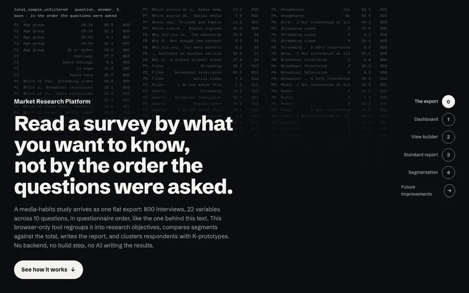
Market Research Platform A browser-only tool that regroups a survey export into research objectives, compares segments, writes the report and clusters respondents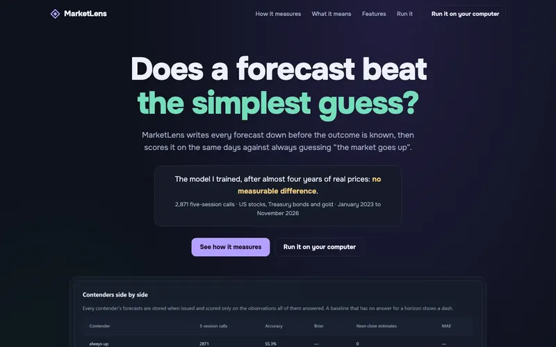
MarketLens Keep the model honest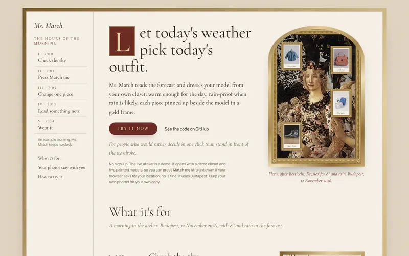
Ms. Match Let today's weather pick today's outfit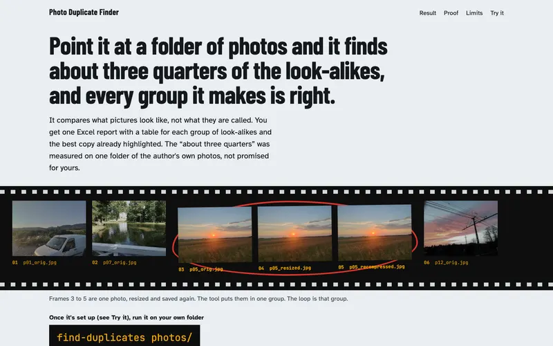
Photo Duplicate Finder A command-line tool that groups look-alike photos from a folder and writes one Excel table per group, with the best copy highlighted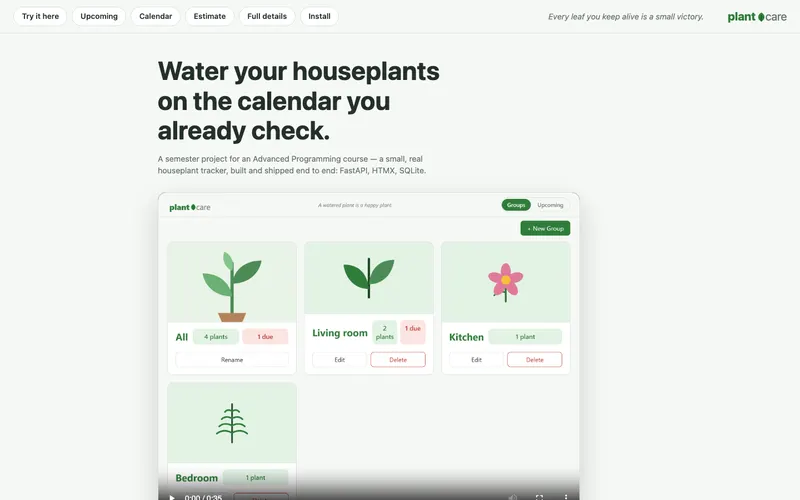
plant_care A watering tracker that lives in your real calendar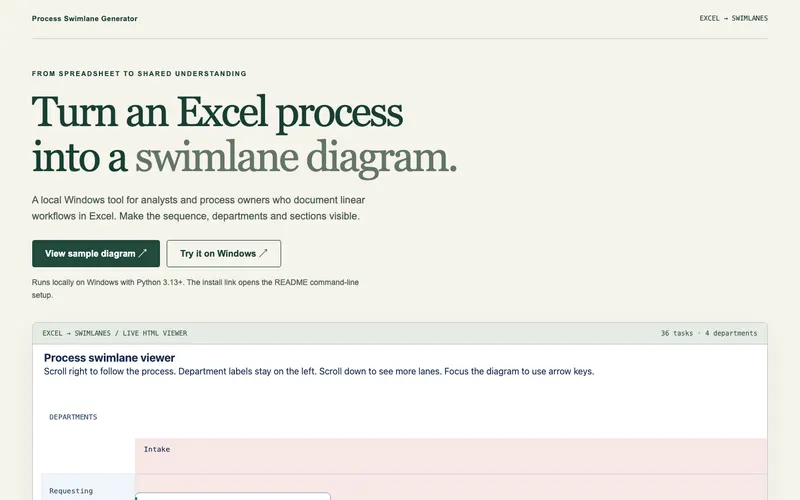
Process Swimlane Generator Excel to swimlanes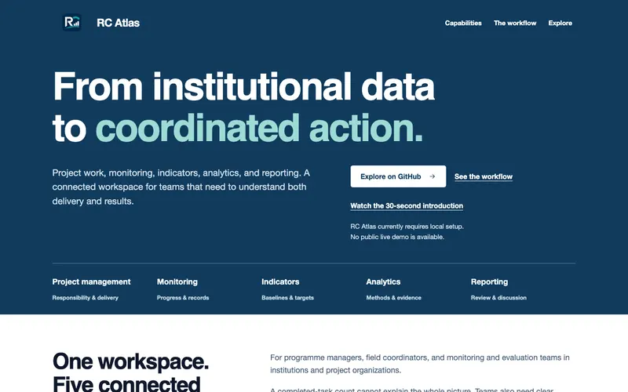
RC Atlas From institutional data to coordinated action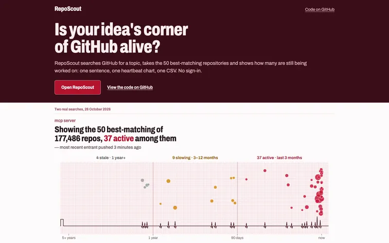
RepoScout Is your idea's corner of GitHub alive?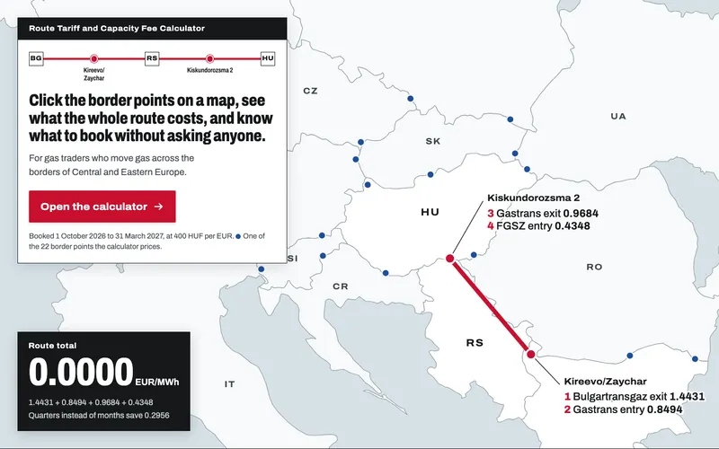
Route Tariff and Capacity Fee Calculator Click the border points on a map, see what a gas route across Central and Eastern Europe costs, and know what to book without asking anyone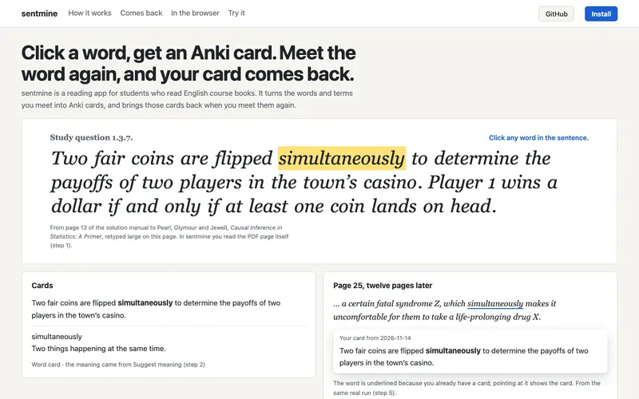
sentmine Read the real page, click a word, get an Anki card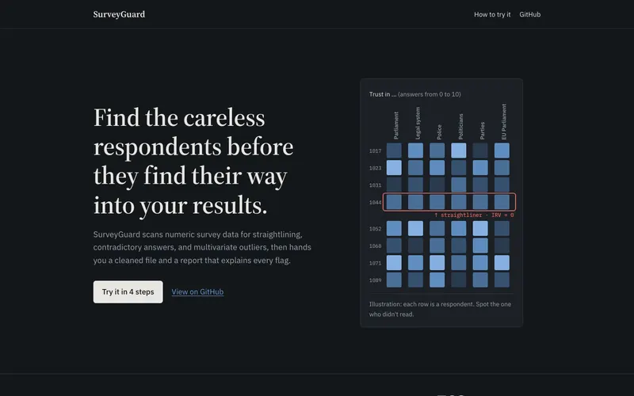
SurveyGuard SurveyGuard finds careless survey respondents: straightlining, contradictory answers, and multivariate outliers, with a cleaned file and a report that explains every flag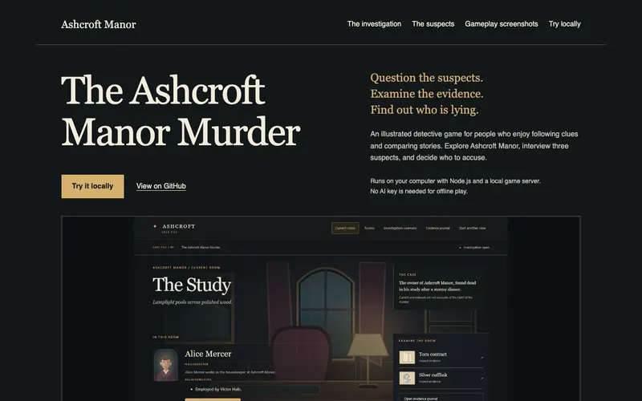
The Ashcroft Manor Murder Explore Ashcroft Manor, question three suspects and compare evidence in an illustrated detective game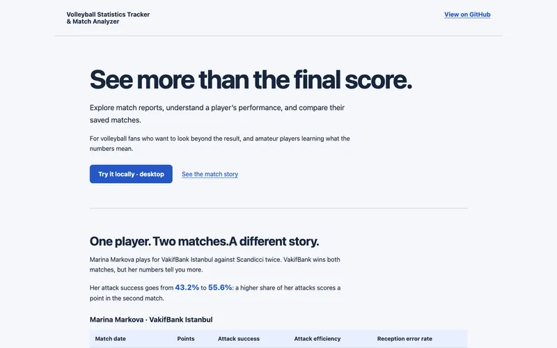
Volleyball Statistics Tracker See more than the final scorePages as of 15 November 2026. Each page belongs to its author; click through to try the program.